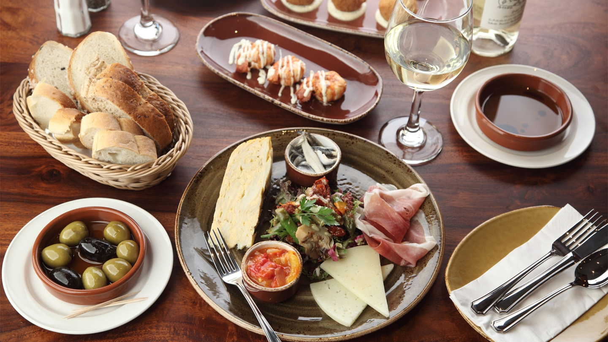

Visit a Cafe worth visiting

My grandmother always told me to go out and experience what life has to offer. If anything new is available, go ahead and try it. If it pans out, well and good, she said; and if it doesn’t, never do it again. If anything, you’ll be wiser for what you’ve experienced. At least you know. I took my grandma’s advice and as soon as I was working, which started pretty early, I used some of my salary to try new things. You can say that I’m my friends’ guinea pig with trying out what’s fresh. What was a way of spending time with loved ones and friends became a quest, too. I went out trying new restaurants in Baguio City as well as those that have been in business for a long time that I haven’t been to.
It took me five years more or less to go through all (if not most) of the Baguio food establishments. As a creature of habit, I kept coming back to the restaurants that I loved most, and that’s probably why I took so long.
Why Should You Visit Kate's Cafe
Kate's Cafe offer you a relaxing and comfortable place. Also good for conversations and bonding with family and friends.
I loved the place and this made my parents love it too. The restaurant seemed magical and fascinating to me when I was an elementary school kid, and surprisingly, the place still fascinates me today. Recently, when I visited my old family house for Thanksgiving, I was astonished and pleased to find out the place still operated and, in fact, was still run by the same family. Apart from the house in which I grew up, Rivenee’s is probably the dearest place to me in the small town, just outside of San Ramon, where I was born and raised.